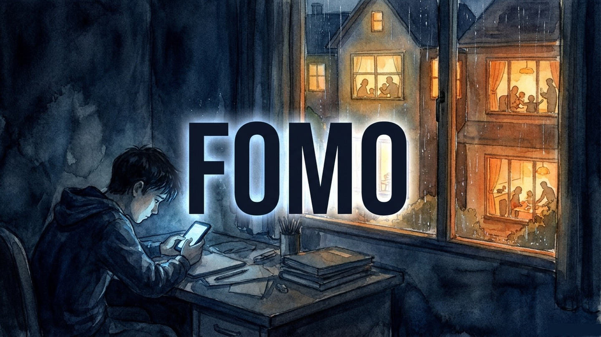
드라마틱 에필로그
시편 24:1, 7
🎵 사운드를 켜고 감상해주세요
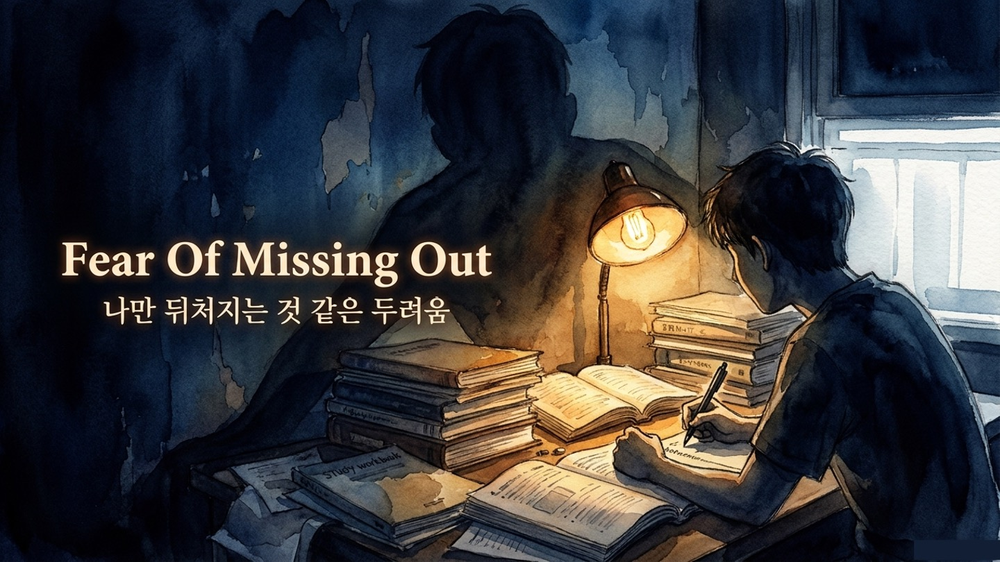
세상의 모든 사람들이 다 잘나가는 것 같고, 나만 제자리에 정체되어 있는 듯한 막연한 불안감.
그 두려움을 뜻하는 현대인들의 신조어, 바로 FOMO(Fear Of Missing Out)입니다.
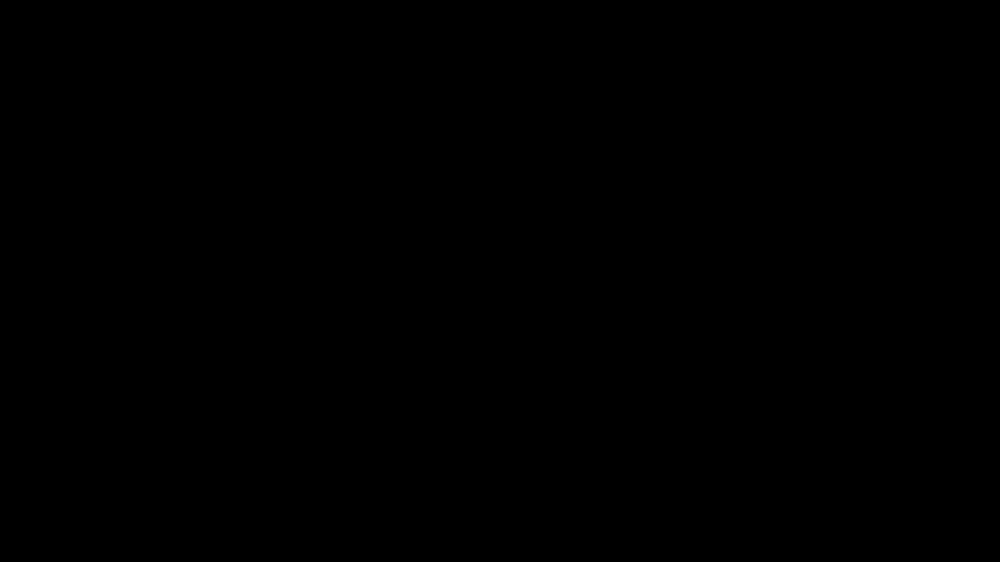
친구들의 SNS 피드를 보며 씁쓸함을 느끼거나, 남들 다 다니는 학원을 나만 안 가면 큰일이 날 것 같은 불안에 시달려 본 적이 있나요?
우리는 나도 모르게 세상의 기준에 맞춰 스스로를 채찍질하고, 두려움에 쫓기며 무언가를 움켜쥐려 바둥거립니다.
전도사님의 아버지는 가난과 뒤처짐이 너무나 두려웠습니다. 그 두려움을 극복하기 위해, 기온이 50도에 육박하는 척박한 사막에서 청춘을 바쳐 일하셨습니다.
더 높이 올라가기 위해, 남들에게 뒤처지지 않기 위해 매 순간 악착같이 달려가셨던 것입니다.
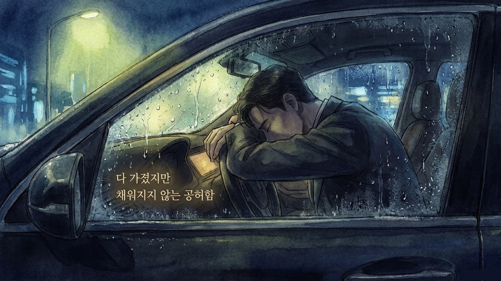
결국 세상의 기준대로 멋진 아파트도 사고 좋은 차도 샀습니다. 그러나 아버지는 행복하지 않았습니다. 마음에 알 수 없는 공허함이 가득했기 때문입니다.
우리도 밤새워 게임 만렙을 찍었을 때 몰려오는 씁쓸함, 비싼 옷을 샀지만 막상 입고 갈 곳이 없을 때 느끼는 헛헛함처럼 '현타'를 마주하곤 합니다.
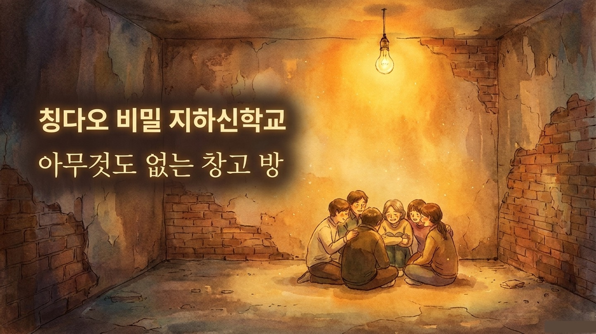
전도사님이 중국 칭다오의 허름한 창고 지하 신학교에서 만난 한 성도님이 계셨습니다.
그곳은 공안 경찰에 걸리면 당장 감옥에 끌려가야 하는 위험천만한 곳이었지만, 그분의 얼굴에는 미소가 가득했습니다.
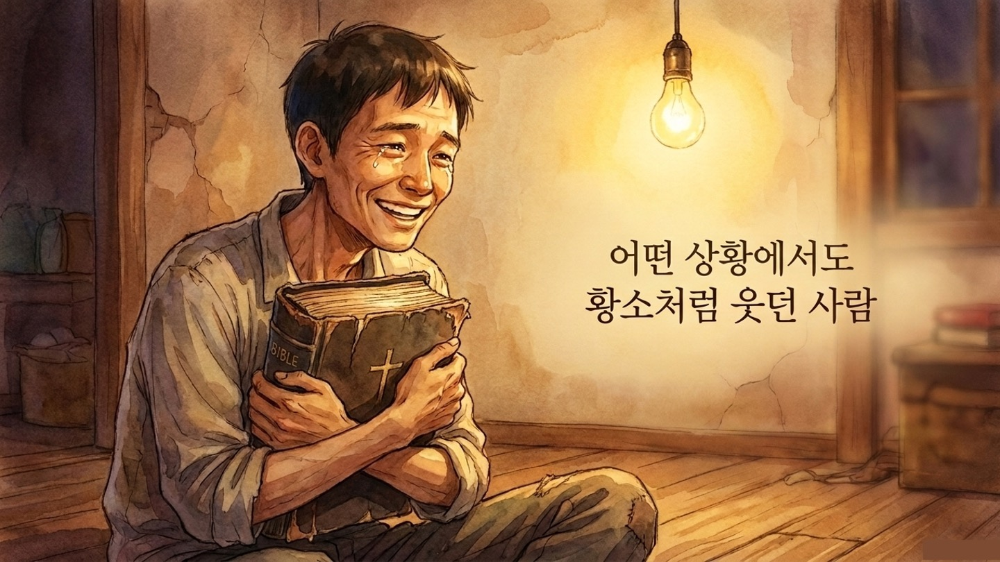
그 지하 신학교 성도님은 세상의 권력이나 체포를 두려워하지 않았습니다. 그가 두려워한 것은 오직 '하나님의 말씀을 사랑하지 못하고 잃어버리는 것'뿐이었습니다.
가장 큰 권능을 가지신 하나님만을 경외했기에, 그는 세상의 그 어떤 위협 앞에서도 두려움 없이 자유롭게 미소 지을 수 있었습니다.
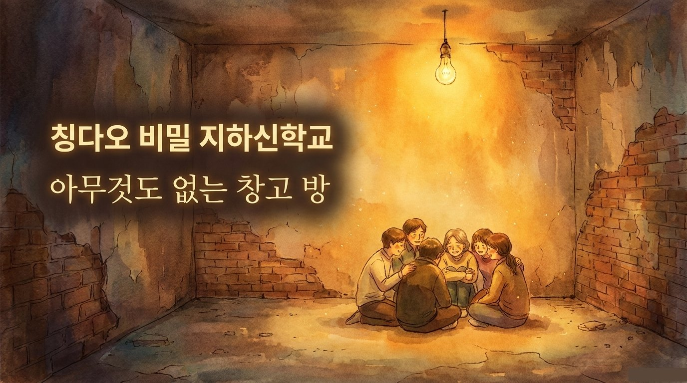
이제 불안의 단어였던 FOMO를, 크리스천으로서 완전히 새롭게 해석해 봅시다.
Follow One Master Only!
남들과 비교하며 조급해하는 것이 아니라, 내 인생의 유일한 구원자이신 진짜 주인 한 분만을 바라보는 것입니다.
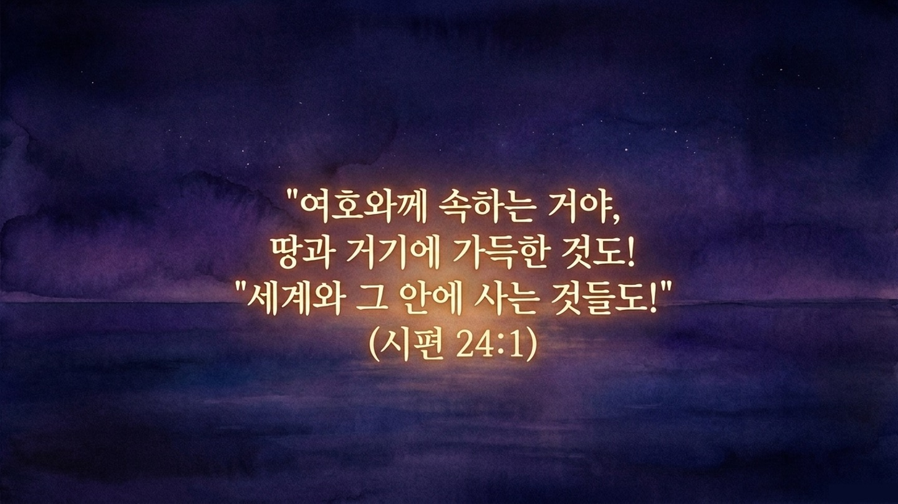
시편 24:1은 '땅과 그 안에 가득 찬 모든 것, 세상과 그 주민이 다 여호와의 것'이라고 선포합니다.
내 공부도, 내 미래도, 내 키와 외모도, 내 인생도 전부 원래 하나님의 것입니다. 그렇기에 내게는 잃어버릴 것도, 빼앗길 것도 없습니다.
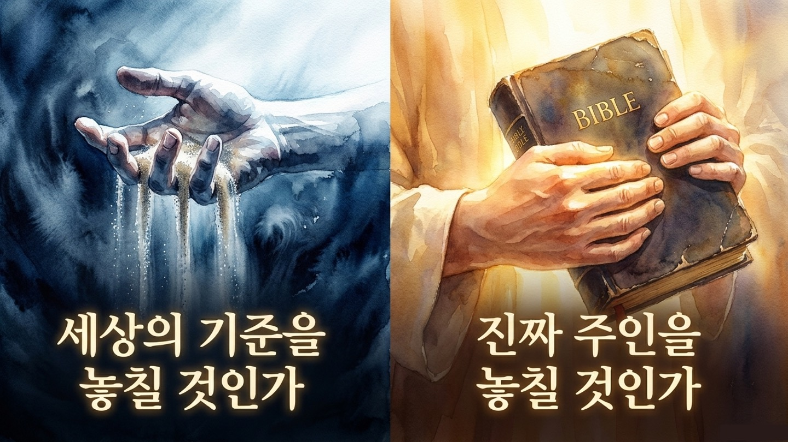
우리의 인생을 하나님의 것으로 되돌려 놓기 위해, 예수님은 이 땅에 직접 오셔서 십자가를 지셨습니다.
스스로 영광을 버리고 자신의 물과 피를 다 흘려, 우리를 위해 모든 것을 내어주셨습니다.
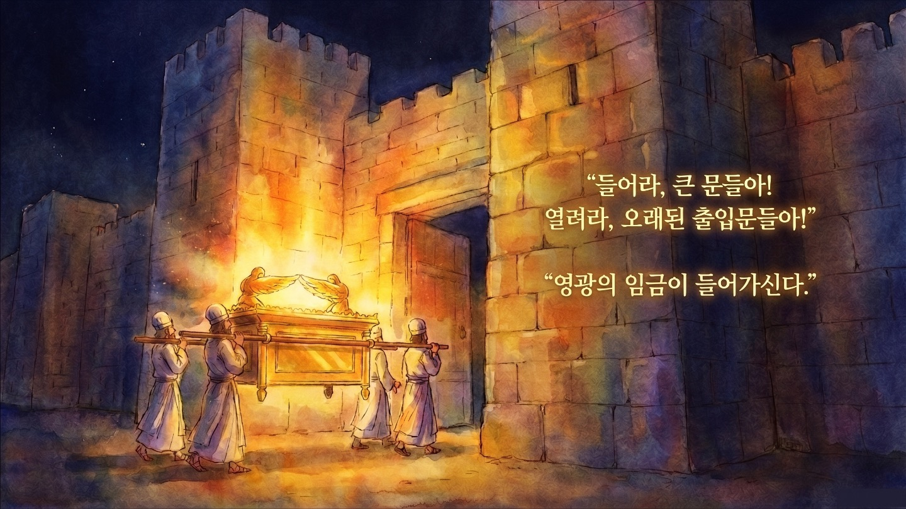
지금까지 내 미래와 성공을 나 혼자 책임지려 불안에 떨며 꽁꽁 쥐고 있었던 주먹을 펴 봅시다.
오래되고 단단하게 닫혀 있던 내 마음의 문을 향해 선포합니다. "문들아 머리를 들어라, 영광의 왕이 들어가신다!"
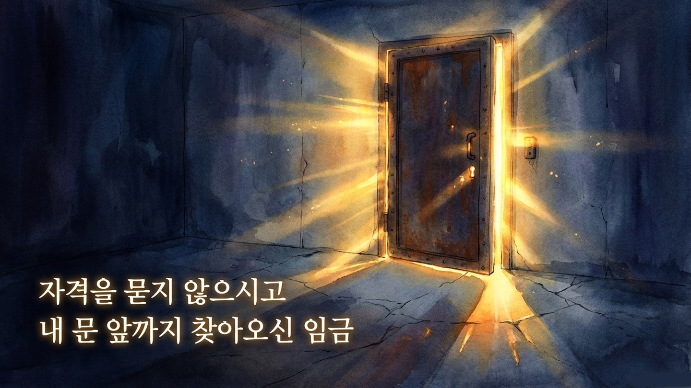
[포] : 포기하고 싶고, 뒤처질까 봐 불안했던 내 인생에
[모] : 모든 것의 진짜 주인이신 예수님이 들어오셨다! 난 세상이 감당 못 할 사람이다!
💬 이번 주 가족 식탁 질문
"오늘 나눴던 이야기처럼, 내 삶을 불안하게 만들고 자꾸 내 손에 꽉 쥐게 만드는 '나만의 FOMO(두려움)'는 무엇인가요? 이제 내 마음의 주인을 예수님 한 분(Follow One Master Only)으로 바꾸기 위해, 이번 주 내 일상에서 꽉 쥔 손을 펴고 실천해볼 수 있는 구체적인 결단은 무엇인지 나누어봅시다."
🙏 부모님의 축복 기도
"하나님, 우리 아이가 세상의 성적이나 비교, 뒤처질지 모른다는 두려움(FOMO)에 사로잡혀 불안해하는 인생이 되지 않게 하옵소서. 온 우주와 우리 아이 인생의 진짜 주인이 하나님이심을 깨닫게 하시고, 꽉 쥐고 있던 불안의 주먹을 펴고 마음의 문을 활짝 열어 영광의 왕 예수님을 온전히 모시게 하옵소서. 오직 진짜 주인 한 분만을 경외하고 따르는(Follow One Master Only) 복된 믿음의 삶이 되게 하옵소서. 예수님의 이름으로 기도합니다. 아멘."
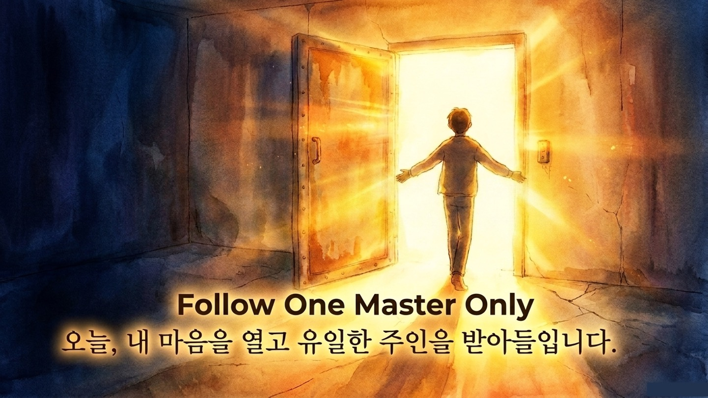
뒤처질까 두려운 인생에서
진짜 주인을 따르는 인생으로!
내 인생을 불안에 떨게 하던 세상의 가짜 주인들을 버리고,
오직 진짜 왕이신 예수님 한 분만 따르십시오.